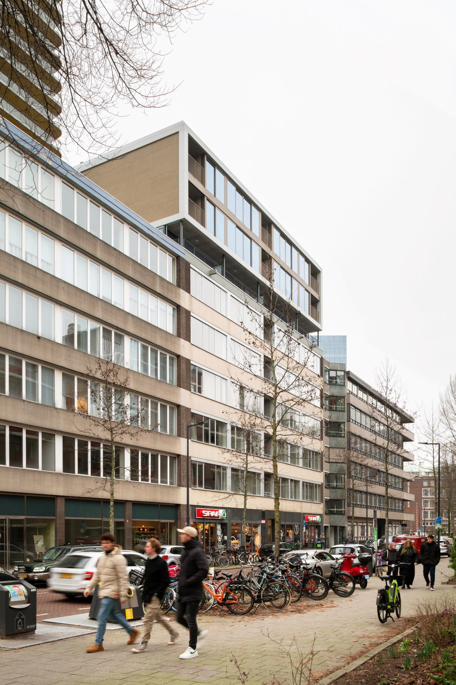

Glashaven
Internship: A project developed at Mei Architects and Planners, Rotterdam (NL), 2018
Glashaven – Symbiosis of Existing & New
From office building to student housing in the heart of Rotterdam.
Glashaven is a transformation project designed by Mei Architects and commissioned by Accresco Vastgoed. Located on Wijnhaveneiland in central Rotterdam, the former post-war office building will be converted into 87 independent student studios, with both private and communal outdoor spaces, a bicycle storage facility, and a supermarket at ground level—which will remain operational throughout the renovation.
The project is guided by the principle of symbiosis between existing and new, respecting the architectural identity of the original building while introducing a new residential program. To accommodate this shift in function, a three-story addition will be constructed on top of the original structure. The new volume aligns with the existing architecture in both scale and materiality, continuing key design elements such as wide horizontal bands and large windows, characteristic of the 1957 building designed by architect W.J. Fiolet.
Great care has been taken to integrate the new volume into the urban context. The addition forms a seamless connection to surrounding developments such as Uptown and Glashaven 16-70, contributing to a coherent urban ensemble. By adding three extra floors, the transformation also helps mediate the transition toward the upcoming high-rise buildings planned for the area. A setback between the existing structure and the new volume introduces a more human scale to the facade, ensuring that the street level remains inviting and pleasant for both residents and passersby.
Glashaven stands as a strong example of urban regeneration, where reuse and expansion coexist in balance. By preserving the identity of the original building while adapting it to contemporary needs, the project contributes to the vitality and sustainable development of Rotterdam’s city center.
